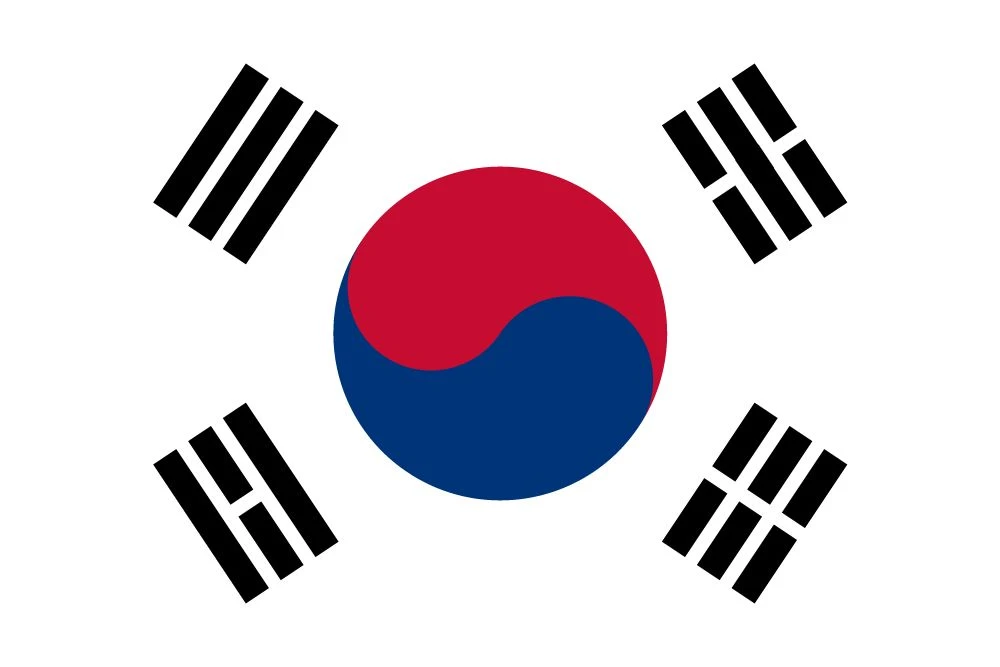
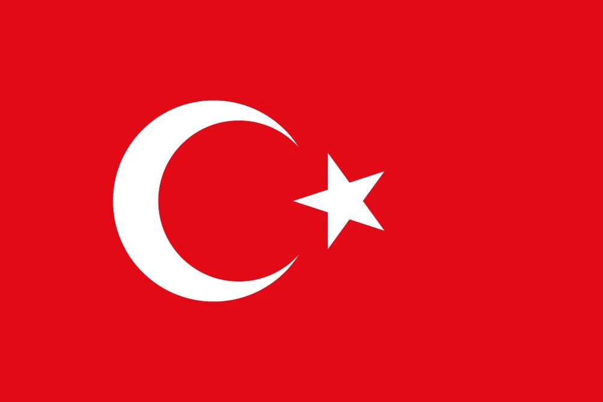
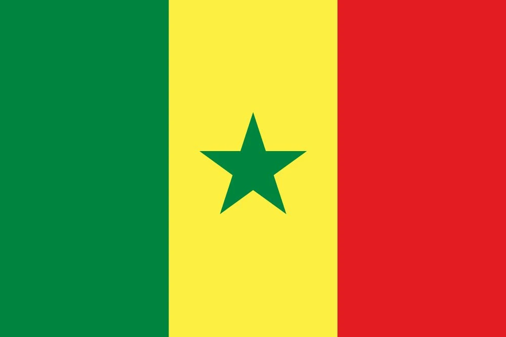

1. Brazil’s Ronaldo-Led Resurrection
Yokohama, June 30, 2002—The International Stadium is electric, filled with 69,029 fans, each holding their breath as Brazil and Germany prepare to clash in the most anticipated final of the 2002 FIFA World Cup. A match that was as much about redemption as it was about glory. For Brazil, it was the culmination of a perfect campaign—a rebirth, led by none other than Ronaldo, the "Fenômeno," who had conquered his injury demons to return as the game’s most dangerous striker. In stark contrast to the 1998 final, where the weight of the world fell upon him, 2002 saw him on a mission, determined to cement his legacy.
Brazil had marched through the tournament with swagger—2-1 against Turkey, Ronaldo finding the net in the 67th minute. They demolished China 4-0, with Rivaldo and Ronaldinho showcasing their dazzling creativity. Costa Rica endured a 5-2 drubbing, while Belgium’s resilience was shattered by a 2-0 quarterfinal win, with Rivaldo’s stunning strike in the 67th minute stealing the show. The semifinals saw Brazil edge England 2-1, thanks to a magical Ronaldinho lob that would go down in history as one of the most iconic goals of the tournament. But now, it was all about Germany—a formidable opponent, led by the indomitable Oliver Kahn.
The final itself was a tactical battle, a chess match of sorts. Germany, gritty and resilient, were well-drilled. Kahn was in imperious form, having kept five clean sheets in the tournament and played an instrumental role in his side’s journey to the final. But Brazil, with Ronaldo’s fire, Rivaldo’s poise, and Ronaldinho’s wizardry, were simply too much.
The game was tense, the first half seeing both sides struggle to break the deadlock. Kahn was a towering presence, denying the likes of Rivaldo and Ronaldinho, his reflexes unmatched. But it was the 67th minute when the game turned. Rivaldo fired a blistering shot from outside the box—Kahn, with all his brilliance, fumbled it. Ronaldo, ever alert, pounced on the rebound and slotted the ball into the net. 1-0 to Brazil.
Twelve minutes later, Brazil struck again. Kléberson delivered a perfectly weighted pass to Ronaldo, who showed calmness and composure to coolly slot past Kahn. 2-0. The Fenômeno had returned, and with it, the World Cup. As Ronaldo tore off his shirt in joyous celebration, his gap-toothed grin radiated across Japan—a symbol of triumph over adversity. Seven games, seven wins, 18 goals—Brazil had reclaimed their throne.
The stadium erupted. Yellow shirts bounced, while Germany’s black and white shirts trudged off the field, their heads hanging low. For Brazil, it was redemption, not just for Ronaldo, but for an entire nation. Rivaldo, who had been overshadowed by Ronaldo’s brilliance, stood by his teammate, arm around his shoulders. "He’s the man," he said. Ronaldo had gone from the depths of despair in 1998 to the pinnacle of footballing achievement in 2002.
In the pubs back home, the celebrations were already in full swing. "For Brazil," Ronaldo shouted, his voice cracking with emotion. “Is he the best ever?” a fan asked, raising his pint in Ronaldo’s honor. Kahn, who had been Germany’s rock throughout the tournament, muttered, “They’re too good,” his face etched with disappointment. But for Brazil, it was the perfect ending. "We’re kings," coach Luiz Felipe Scolari grinned, a cigar dangling from his lips as he reveled in his squad’s triumph.
The legacy of Brazil's 2002 World Cup will forever be etched in gold. Ronaldo’s resurgence was nothing short of a fairytale, a comeback story for the ages. Michael Ballack, Germany's captain, could only sigh in admiration as he reflected on the tournament. “Unreal,” he said. Even England’s David Beckham, still reeling from Brazil’s knockout of his side, tipped his hat to the samba kings. Brazil’s victory was complete—an iconic tournament, a celebration of redemption, and a story that would echo in the annals of football history for decades to come.
“‘02’s ours,” Ronaldo said in the end, his legacy sealed with that final goal, a testament to Brazil’s resilience, samba spirit, and footballing brilliance. From the highs of the group stages to the final whistle in Yokohama, Brazil’s 2002 World Cup was a saga of triumph, and Ronaldo was its undisputed hero.

2. Ronaldinho’s Cheeky Lob
Shizuoka, June 21, 2002—The stage is set, the fans are in full voice, and Brazil, having danced their way through the group stages, are now set to take on England in the quarterfinals. The ghosts of ’66 loom large over England, who are seeking revenge for their past misfortunes. But Brazil, with their flair, rhythm, and magic, are not to be intimidated. The man leading the charge is none other than Ronaldinho—the joker, the wizard, the one who made even the simplest pass look like an art form.
The match begins, and it’s tight, tactical, and fiercely contested. England’s Michael Owen puts them ahead in the 23rd minute, 1-0, and for a while, it looks like Brazil’s samba will be stifled by the rigidity of the English defense. But just before halftime, in the 45th minute, Brazil equalize. Rivaldo’s composed finish brings Brazil level—1-1—and the momentum shifts. In the Brazilian camp, Ronaldinho’s smile widens. He knows the job isn’t finished, but he can feel it in the air.
Then, the 50th minute arrives, and with it, one of the most iconic moments in World Cup history. A free-kick, 35 yards out, is awarded to Brazil. Ronaldinho, always the showman, steps up. England’s wall is fidgeting, the defenders are tense, and goalkeeper David Seaman is positioned well off his line. But Ronaldinho, with that cheeky grin of his, sizes up the situation, glances at Seaman, and takes a deep breath.
With one swift strike, he bends the ball in a way that seems impossible—a curling, dipping lob that floats over Seaman’s head and into the net. 2-1 to Brazil. Seaman, flailing, can only watch as the ball sails past him. “I meant it,” Ronaldinho later admits with a laugh, but was it a stroke of genius or a fluke? Debate rages in pubs across the world. But for Brazil, it’s a moment of pure magic.
The match, however, takes a dramatic turn soon after. Ronaldinho, ever the maverick, receives a red card in the 57th minute for a reckless stamp on Danny Mills. Brazil, now down to ten men, hold firm, defending their slender lead. England push forward with everything they have—Owen and Paul Scholes test the Brazilian defense, but it’s too little, too late. The match ends 2-1, and Brazil are through to the semifinals.
As the final whistle blows, the Brazilian fans erupt, their samba spirit alive and well. "For the fans," Rivaldo shouts, arms raised in triumph. In the pubs, the replays of Ronaldinho’s cheeky lob continue to roll. "He’s magic," coach Luiz Felipe Scolari beams. Rivaldo and Ronaldo, the two stars of the tournament, are in full celebration mode. Brazil, once again, are showing the world how football is meant to be played.
“Unreal,” England’s David Beckham mutters, clearly still stunned by the audacity of Ronaldinho’s goal. Even after his early exit, Ronaldinho’s mark on the tournament is indelible. He may have been sent off, but he had already left his signature—one that would forever define the Brazilian style.
“It’s iconic, mate,” said one fan, reflecting on the moment that would be replayed countless times in years to come. "My spark," Ronaldinho said with a wink, forever part of Brazil’s 2002 World Cup folklore. It was a tournament full of magic, and Ronaldinho’s cheeky lob was one of its defining moments. From the group stages to the final, Brazil had dazzled the world, and in the heart of it all was Ronaldinho—whose cheeky grin and cheekier plays had become the symbol of their brilliance.
3. Kahn’s Heartbreak Wall
Yokohama, June 30, 2002—69,029 fans are on the edge of their seats as the final between Brazil and Germany unfolds. For Oliver Kahn, Germany’s goalkeeper, this was supposed to be his crowning moment. After all, he had been nothing short of a wall throughout the tournament. With five clean sheets to his name, Kahn had established himself as the undisputed keeper of the World Cup. From Saudi Arabia’s 8-0 demolition to South Korea’s 1-0 semi-final exit, Kahn’s gloves had been a fortress. Germany’s defense had been solid, and Kahn’s performance was widely hailed as one of the greatest goalkeeper displays in history.
But then came the final. With the weight of an entire nation on his shoulders, Kahn was about to face a Brazil side that had been irrepressible throughout the tournament. Ronaldo, Rivaldo, Ronaldinho—they were all in fine form, and this was not going to be an easy game. The first half was a tense, tactical affair with both teams unable to break the deadlock. Kahn was, as expected, in top form, making crucial saves to deny Brazil’s attackers.
However, in the 67th minute, it all came crashing down. Rivaldo unleashed a powerful shot from the edge of the box, one that Kahn could only parry. The rebound fell straight into Ronaldo’s path, and the Brazilian striker did not need a second invitation. With a clinical finish, he slotted the ball home to make it 1-0. Kahn’s face reflected his disbelief; the wall had cracked.
Twelve minutes later, it happened again. A clever pass from Kléberson found Ronaldo in space, and once again, the Brazilian striker showed his class, coolly slotting past Kahn to make it 2-0. Despite having saved six shots up to that point, Kahn had been undone twice. His performance was still extraordinary, but those two moments defined his tournament.
After the final whistle blew, Kahn, devastated, stood at the center of the pitch. Germany had fought valiantly, but the dream had slipped away. He had given everything, but it wasn’t enough. “Gutted,” said Miroslav Klose, his teammate. Despite his Golden Ball award as the tournament’s best player, Kahn’s personal heartbreak was undeniable.
Yokohama had turned into a Brazilian carnival, with yellow shirts flooding the stands in celebration. Kahn, meanwhile, was left to reflect on what could have been. "They’re too good," he muttered, acknowledging Brazil’s brilliance. But in his heart, he knew that his own performance, while remarkable, would always be overshadowed by those two crucial mistakes.
For Germany, the pain was real. "For the lads," Kahn whispered, his voice heavy with emotion. Over a pint, the discussions continued—Germany’s near-miss, Brazil’s samba magic. "It’s tough," said England’s David Beckham, a man who knew the agony of falling short on the world stage.
Kahn’s story at the 2002 World Cup is one of raw emotion—a journey of triumph and heartbreak. It’s a reminder of the fine margins that separate glory from despair. For Kahn, the heartbreak would sting, but his performance throughout the tournament would never be forgotten.

4. South Korea’s Miracle Run: A Tale of Grit and Glory
Seoul, June 25, 2002 – The atmosphere at the World Cup semifinal in Seoul’s World Cup Stadium is electric, with 65,256 passionate fans chanting, waving flags, and wearing the red of their beloved team. The noise is deafening, and the stakes couldn’t be higher. South Korea, co-hosts of the 2002 World Cup, find themselves facing one of the giants of international football: Germany. Yet, these are not the same underdogs that many predicted would stumble early in the tournament. No, these are the Red Devils, guided by the tactical genius of Dutch coach Guus Hiddink, who have already taken the world by storm.
From the very first match of the tournament, South Korea showed the world they were no pushovers. A 2-0 victory over Poland marked their arrival. A late equalizer against the United States in the group stage, followed by a stunning 1-0 win over Portugal, saw them finish top of their group. The world took notice. Ahn Jung-hwan’s goal in the 117th minute against Italy in the Round of 16, followed by a nerve-wracking penalty shootout win over Spain in the quarterfinals, confirmed it: this team was on a mission, a mission to rewrite the script of World Cup history.
Hiddink’s South Korea was more than just a team; they were a force of nature. Their relentless work rate, tireless pressing, and never-say-die attitude made them a nightmare for any opponent. With Park Ji-sung running the midfield, Lee Young-pyo offering pace and creativity from the flanks, and Ahn Jung-hwan’s lethal finishing, the Red Devils became the story of the tournament. But there was one hurdle left: Germany.
Despite their status as co-hosts, South Korea’s chances against Germany seemed slim. Germany had dominated the tournament, with Oliver Kahn standing tall between the posts and Michael Ballack pulling the strings in midfield. It was clear that the Germans would be the toughest challenge South Korea had faced.
The match itself was a tense, tactical battle. South Korea pressed high, trying to force Germany into mistakes, but the German defense, led by Kahn, was resolute. The match was a chess match, with both sides looking for any opening. However, it was Ballack’s 75th-minute strike that ultimately broke the deadlock. Germany, with their typical clinical finishing, seized the moment, and a 1-0 lead was all they needed.
For South Korea, it was heartbreak. They had fought valiantly, giving everything they had, but it wasn’t enough to overcome the might of Germany. The stadium, filled with tears and pride, showed just how far this team had come. They may have lost the battle, but their journey had been nothing short of miraculous.
As the final whistle blew, the German players embraced, while the South Koreans stood with heads held high. They had exceeded all expectations. Four wins, one draw, one loss, and seven goals scored. South Korea had defied the odds and made it to the semifinals, a feat that no one had believed possible. And while the tournament would end with a fourth-place finish, their fairytale run would never be forgotten.
In the streets of Seoul, fans were still buzzing, their chants echoing in every corner. The pride of the nation was undeniable. “For the people,” Ahn Jung-hwan shouted after the match, his voice breaking with emotion. Over a pint, pub-talk centered around the dream run of South Korea, the first Asian nation to reach a World Cup semifinal.
“We gave it our all,” Park Ji-sung said, the glint of pride in his eyes. And it was true. South Korea had delivered something far beyond what anyone could have imagined. They had delivered hope, passion, and an unforgettable World Cup adventure. Hiddink’s tactical masterclass had turned a team of underdogs into a symbol of national pride. For South Korea, the 2002 World Cup was a moment that defined a generation.
In pubs across the world, the tale of South Korea’s miracle run would continue to be told. From the historic win over Italy to the penalty shootout drama against Spain, this was a team that had fought for every inch, never backing down, never giving up. And while they may not have taken home the trophy, they had earned something far more valuable: the respect of the footballing world. South Korea’s World Cup was not just a story of an underdog’s dream; it was a story of heart, of unity, and of a nation’s spirit. A tale that would be retold for generations to come.
5. Turkey’s Bronze Blitz: The Unexpected Heroes of 2002
Daegu, June 29, 2002 – The World Cup third-place match, a clash of two teams that defied the odds, was set to take place in the hot, humid air of Daegu. On one side, South Korea, whose fairy-tale run to the semifinals had captivated the world. On the other, Turkey, a nation that had long been a sleeping giant in international football but had never quite fulfilled its potential on the world stage. Now, in 2002, they had the chance to claim something special – a place on the World Cup podium.
Turkey’s journey to this point had been one of grit, determination, and an unrelenting desire to prove themselves on the world’s biggest stage. Their tournament began with a hard-fought 1-1 draw against Ireland, followed by a narrow 2-1 loss to Brazil. Yet, they never lost faith. Their victory over China 3-0, which featured a brace from Hakan Şükür, had ignited hope. A 1-1 draw with Costa Rica put them into the knockout rounds, and they seized their opportunity, defeating Japan 1-0, thanks to a clinical strike from Şükür.
In the quarterfinals, Turkey pulled off one of the most memorable moments of the tournament, with a 3-2 win over Senegal, secured by a golden goal from İlhan Mansız. But their semifinal match against Brazil was a step too far. Despite giving it their all, they were undone by a single strike from Ronaldo, and Turkey found themselves relegated to the third-place match.
South Korea, brimming with pride after their miraculous run, stood in their way. The Red Devils had already made history by becoming the first Asian team to reach the World Cup semifinals, and now they were aiming to finish their campaign on a high note. But Turkey wasn’t about to let them have it easy.
From the very first whistle, Turkey came out with all guns blazing. Within 10 seconds of the match, Hakan Şükür made history by scoring the fastest goal in World Cup history. The goal sent shockwaves through Daegu, and Turkey’s belief surged. South Korea, never a team to back down, responded with their usual intensity, but Turkey’s clinical finishing proved too much. Şükür’s early strike was followed by two goals from Mansız in the 32nd and 37th minutes, sealing a 3-1 victory for Turkey. The bronze was theirs.
Turkey’s incredible performance was a testament to their resilience and heart. Four wins, one draw, and two losses, with ten goals scored in total. From the golden goal against Senegal to the emphatic win over South Korea, this was a team that had fought for every point, every goal, and every minute on the field.
In the aftermath, the streets of Daegu erupted in celebration. Fans waved flags and cheered for their heroes, a nation united in pride. “We took it,” Hakan Şükür said, his voice filled with emotion. Over a pint, the pubs of Turkey buzzed with talk of their national team’s triumph. “Gutsy,” coach Şenol Güneş said, his smile wide as he celebrated with his players.
For South Korea, there were no hard feelings. They had pushed Turkey to the limit and had given everything they had in their own remarkable World Cup journey. The bronze medal match was a fitting end to two teams that had made history and captured the hearts of fans worldwide.
As Turkey’s players lifted the third-place trophy, they knew they had achieved something truly special. It wasn’t the ultimate prize, but it was a moment to savor. For the first time in their history, Turkey had stood proudly on the World Cup podium. Their performance in 2002 had proven that they were no longer just potential – they were a force to be reckoned with.
6. England’s Penalty Curse Strikes Again: The Heartbreak of Shizuoka
Shizuoka, June 21, 2002 – A sense of anticipation hung in the air at the Shizuoka Stadium as 47,436 fans packed into the stands, their eyes glued to the pitch where England were about to face Brazil in the quarterfinals of the 2002 FIFA World Cup. This was the moment. Sven-Göran Eriksson’s men had arrived at the business end of the tournament, with momentum building after an impressive group stage and a commanding 3-0 victory over Denmark in the Round of 16.
With a squad that included talismanic figures like David Beckham, Michael Owen, and Rio Ferdinand, the English team was buzzing with belief. The group stage had been a mixed bag: a 1-1 draw with Sweden after Sol Campbell’s header, a 1-0 win over Argentina thanks to Beckham’s coolly converted penalty, and a dull 0-0 draw with Nigeria. But they were through to the knockout stages, and that’s all that mattered now.
The Round of 16 was a demonstration of England’s strength, with goals from Rio Ferdinand, Michael Owen, and Emile Heskey sealing a 3-0 win over Denmark. The nation dared to dream again. In the quarterfinals, they were ready to take on Brazil – a Brazil that had been dazzling throughout the tournament but was vulnerable, as they had been prone to moments of inconsistency. England, on the other hand, had the momentum, and it seemed like their time had finally come.
From the very first whistle, England came out with a bang. Just 23 minutes into the match, Michael Owen picked up a pass, danced past Brazilian defenders, and slotted the ball coolly past Marcos to give England a 1-0 lead. The stadium erupted. Beckham, grinning widely from the sidelines, raised his arms in celebration. “We’ve got them,” he said, the confidence in his voice evident. England were on top. But this was Brazil, and they were never going to go down without a fight.
Minutes before the halftime whistle, Brazil struck back. Rivaldo, ever the opportunist, equalized with a scrappy goal that caught the English defense off guard. The halftime break came, and while England’s spirit remained high, they knew the challenge was far from over.
Then, in the 50th minute, came the moment that would haunt England for years to come: Ronaldinho, the Brazilian genius, floated in a free kick from 40 yards out. The ball arced perfectly over the head of England’s goalkeeper, David Seaman, and into the back of the net. It was an audacious strike, a moment of magic that left England reeling. From 1-0 up, they were now 2-1 down.
Brazil’s flair had tilted the game in their favor, but England refused to lie down. Despite the setback, they pressed forward, creating a few more chances, with Owen and Paul Scholes getting in positions to level the game. But Brazil’s defense held firm, and Seaman, rattled by the earlier strike, couldn’t quite provide the heroics needed at the other end.
The match wore on with Brazil managing to hold their advantage. In the final moments of the game, England pushed desperately for an equalizer, but it was not to be. The final whistle blew, and England’s World Cup dream was over. The scoreline read 2-1, and with it, a nation’s hopes shattered once again.
In the stands, English fans slumped in despair, their heads in their hands. They had come so close, so painfully close, yet once again, the penalty curse had struck. In the pubs back home, the replay of Ronaldinho’s lob would be watched over and over again, each viewing only deepening the collective sense of heartbreak. The penalty shootout demons that had haunted England for years weren’t the problem this time, but the crushing feeling of coming so close to victory, only to fall short once again, was all too familiar.
“We were so close,” Michael Owen said afterward, his voice heavy with disappointment. “We fought hard, but it wasn’t enough.” With four wins, two draws, one loss, and six goals scored, England had shown they were more than capable, but the gods of football were simply not on their side.
Sven-Göran Eriksson, the England manager, summed up the mood perfectly as he sat in the locker room after the game. “Ours slipped,” he muttered, the sting of the loss still fresh. For Eriksson and his team, it was another bitter chapter in England’s long-running World Cup saga. The ghosts of ’66, the glorious triumph that still loomed large in English football history, seemed to fade just a little bit further away with each passing tournament.
For Brazil, it was a moment of celebration. They had weathered the storm, shown their quality, and booked a place in the semifinals. “For the lads,” Beckham roared in defiance, proud of the effort but crushed by the result. The pubs back home hummed with talk of England’s valiant but ultimately unsuccessful bid to reach the semifinals. Clips of Argentina’s scalp, the victory over Denmark, and that stunning goal from Beckham against Argentina flooded across screens. “Gutsy,” Brazil’s coach Luiz Felipe Scolari remarked, nodding to the English spirit. “But we’re in the semis, and that’s where the real fight begins.”
But for England, the pain was raw. Beckham, his face etched with frustration, was candid. “It’s England’s pain,” he reflected, thinking of the countless near-misses that had come before. The belief that they could conquer the world was alive, but it was always tempered by the cruel reminder of just how hard it was to lift that elusive World Cup trophy.
It wasn’t just a loss on the field; it was a mental blow, a continuation of the narrative of English underachievement on the world stage. The tournament was over for England, their hopes dashed by moments of brilliance from Brazil and, perhaps, a little bit of bad luck. Yet, as always, football had a way of teaching them the harshest lessons. The England penalty curse had struck again. The question remained: would the team ever be able to break it?

7. Senegal’s Shock Debut: The African Kings of 2002
Seoul, May 31, 2002 – The atmosphere in the Seoul World Cup Stadium was electric. The defending champions, France, were set to face Senegal in the opening match of the 2002 World Cup. The French team, dripping with talent, featured the likes of Zinedine Zidane, Thierry Henry, and Patrick Vieira, and had just lifted the UEFA Euro 2000 trophy. They were expected to cruise past Senegal, whose players had never before graced the grand stage of a World Cup.
But from the very first whistle, it was clear that this tournament would be different. Senegal, a team making their World Cup debut, played with fire and passion. Their approach was bold and fearless, qualities that would define their tournament. And in the 30th minute, their star midfielder Papa Bouba Diop delivered the first major shock of the World Cup.
As El Hadji Diouf made a blistering run down the right, Diop surged into the box to meet the ball and, with a scrappy tap-in, fired past French goalkeeper Fabien Barthez. The stadium fell silent. Senegal had scored the first goal of the tournament, and it was against the reigning world champions. A nation had arrived.
“I can’t believe it,” Diop exclaimed as he raced to the corner flag, arms outstretched in disbelief. The Senegalese bench erupted. France, stunned and visibly shaken, struggled to regain their rhythm. Zidane limped off in the first half, a sign of the mounting pressure. France were reeling. Senegal, meanwhile, were emboldened.
The African team wasn’t just content with that early lead; they kept the pressure on. They followed up their opening win with another gritty performance against Denmark, drawing 1-1 thanks to a second-half goal by Salif Diao. In a thrilling 3-3 draw against Uruguay, Diouf’s penalty in the 26th minute kept their momentum alive. Senegal had arrived in the world’s biggest football tournament not just as underdogs, but as genuine contenders.
In the Round of 16, Senegal faced Sweden, and it was there that they would seal their place in footballing folklore. After a 1-1 draw, Senegal emerged victorious in the golden goal period, with Henri Camara delivering a stunning strike that sent them through to the quarterfinals. Senegal were no longer just participants—they were players in this World Cup story.
The quarterfinals against Turkey were equally dramatic. With the game locked at 2-2 after extra time, it was once again a golden goal that ended the match, this time scored by İlhan Mansız for Turkey. Senegal’s World Cup dream had come to an end, but they had captured the hearts of millions with their shocking debut.
Senegal’s coach, Bruno Metsu, beamed with pride after the quarterfinal defeat. “We dreamed,” he said, his voice filled with emotion. “We’ve done something extraordinary. We’ve shown the world what Africa is capable of.”
Senegal’s run was a true fairytale. Three wins, two draws, and one loss, with eight goals scored. The world had witnessed the rise of a footballing power. Their story was one of heart, unity, and the realization that African teams were ready to shine on the global stage. The Senegalese fans who had traveled to South Korea and Japan were not disappointed. Their team had delivered in spectacular fashion.
In the pubs back home, the chatter was all about Senegal’s miraculous journey. “For the people,” Diop shouted, as his teammates celebrated their achievements. Their historic run was more than just a football story—it was a cultural moment, a triumph of the underdog. Senegal had made their mark on the 2002 World Cup, and their journey would be remembered for years to come.
Senegal’s shocking debut had left an indelible impression on the world of football. It was a tournament where new stars were born, and Senegal’s roar was heard loud and clear. "Senegal’s heart," Diop said with a smile. "We showed the world what we can do." And indeed, they had.
